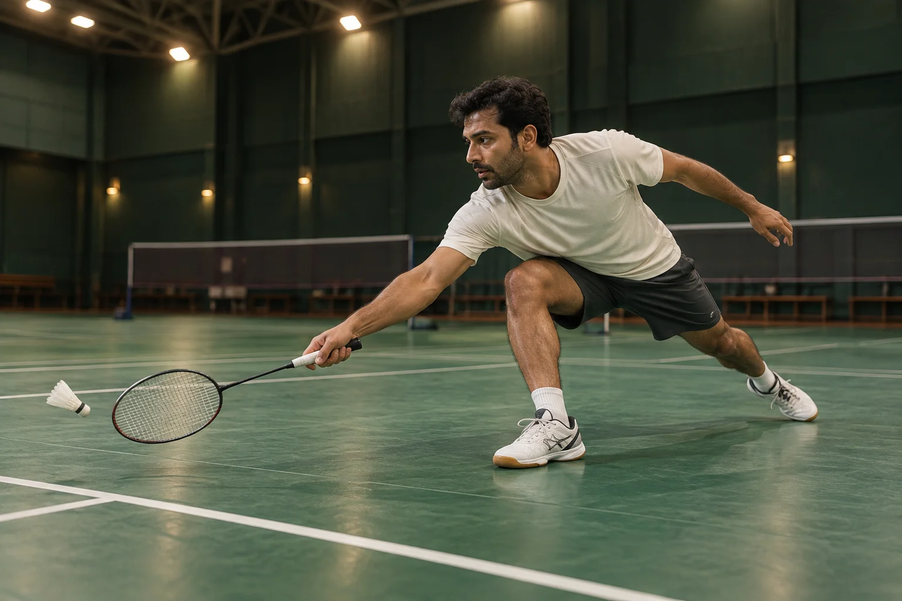
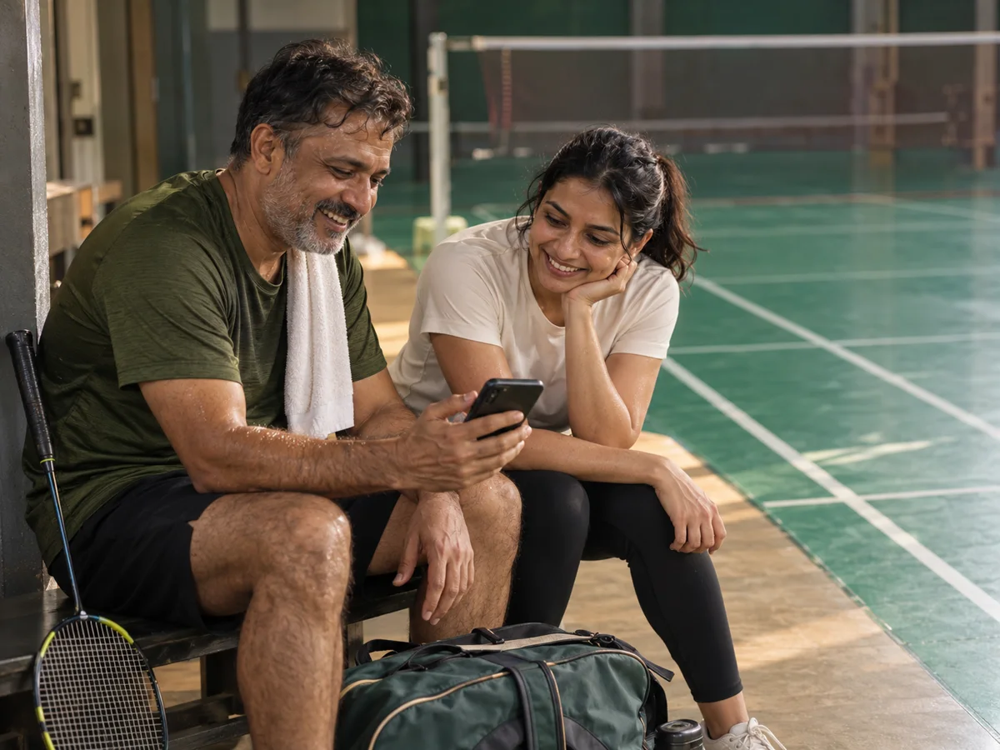

Numbers with definitions.
A rally count needs a boundary. A percentage needs a denominator. A highlight needs a reason to be selected.
There’s a whole game inside your footage. Relive the rally, explore the movement and follow the evidence to a clearer understanding.
Explore the evidenceVideo intelligence, starting with badminton.


The recovery you didn’t think you’d reach. The exchange nobody wanted to end. The tiny detail you notice only when you watch again.
Rally is being built to bring those moments closer. For players who are curious, coaches looking for context, and everyone who wants to get more from the game.
Find the exchange worth watching again, with the surrounding play still in view.
One scene. Different ways to see it.
Turn the layers on, follow the movement, and see where an observation begins.
Estimated landmarks locate joints in this image. They do not measure physical speed or technique quality.
Pose: estimated from generated images. Movement and event layers: illustrative concepts.
Start with a question. Explore a pattern.
Every number should tell you what it counts, where it came from, and what it leaves out.
6 rallies · 54 candidate strokes · 70 seconds of active play.
Select a rally to inspect its record. Two warm-up exchanges are excluded.
The six official rallies contain 6, 10, 4, 14, 8 and 12 candidate strokes.
“Show me the long rallies” should lead somewhere you can inspect.
The product’s assistant is designed around bounded tools: retrieve the record, calculate from it, then check the answer against its sources. If the evidence cannot support a claim, the answer should say so.
The existing read-only tool set: match overview, rally list, rally detail, player stats, stroke search, highlights, momentum, and rules or background.
Pose, trajectory, cross-session comparison and reanalysis tools are future extensions. This local example runs defined calculations, without an AI service.
Rallies 2, 4 and 6 contain at least 10 candidate strokes.
A transparent demonstration on synthetic data. No upload, account or external AI call.
The bigger idea is video you can reason with. A foundation that connects what is seen, what happened, and what the evidence can explain.
This supplied basketball clip shows tracking annotations already present in the video. It illustrates the wider vision; it is not a demonstration of a shipped Rally basketball capability.
17-second supplied reference · Plays on a loop, silently.
Badminton provides the first concrete language: courts, exchanges, candidate strokes, rally boundaries and match context.Each observation still needs suitable footage, explicit scope and reviewable evidence.
A rally count needs a boundary. A percentage needs a denominator. A highlight needs a reason to be selected.
Candidate events, missing observations and unknown strokes belong in the record. Confidence is a cue for review, never a promise of correctness.
An answer should take you back to the relevant exchange, frame or observation, so you can see the context for yourself.
The initial badminton work connects rally records, candidate strokes, active-play summaries, shot distributions, highlights and grounded questions. This website makes that direction tangible with a synthetic record and separate visual studies.
Camera stability, court visibility, occlusion, resolution and suitable calibration all matter. A fixed view that keeps play visible is a useful starting point. Suitability should be assessed before trusting the analysis.
Reliable four-player identity, frequent occlusions and partner interactions need additional validation. This site does not promise production-ready doubles analysis.
The single-image pose demonstration estimates 2D landmarks. It does not establish shuttle speed, physical distance, injury risk or biomechanical quality. Those claims require appropriate measurement methods and validation.
Live analysis and additional sports are directions for future work. Badminton is the first application. Every new domain needs its own event definitions, tools and evaluation.
The six rallies are a hand-authored fixture shared by every calculation on this page. Generated images, estimated pose, illustrative movement paths and the supplied basketball reference are labelled separately. They are not a measured match or an accuracy benchmark.
A match you want to understand.
A coaching question. A different kind of footage.
Tell us what you would like to see more clearly. Prepare a short brief to copy or download for a conversation with the team.
This form works on your device. Nothing is uploaded or sent.
Your starting point, ready to share.